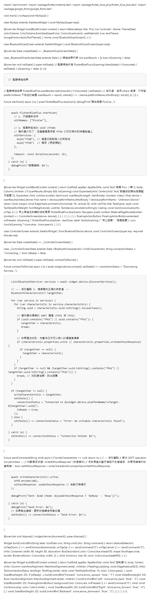
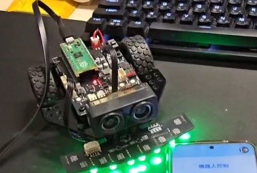

把手機 App、藍芽通訊與小車端程式串成一個完整遙控專案
主題 06
本主題是進階遙控單元，建議先完成 03 小車移動，再使用既有 Flutter 介面與 Pico BLE 小車程式完成手機控制。

把手機 App、藍芽通訊與小車端程式串成一個完整遙控專案
保留原教材檔案下載，同時把上課時需要先說明的概念、操作順序與關鍵程式整理成網頁版。
Before You Start
這是進階遙控主題。學生應先完成 03 小車移動，確認小車端五個基本動作都正確，再進入手機 App 與 BLE。
File Location
這個主題有兩邊：Flutter App 留在電腦或手機端開發，Pico 端只放 BLE 與小車控制需要的 Python 檔案。
downloads/topic-06-bluetooth-car/
├─ main.dart ← Flutter App 主畫面
├─ controler_ble.7z ← App 專案壓縮檔
└─ flutter-app-preview.png ← 網頁預覽圖Raspberry Pi Pico /
├─ blue.py ← BLE 通訊
├─ bot.py ← 小車動作
├─ moto.py ← 馬達控制
├─ rcbot.py ← 主程式
└─ main.py ← 若要開機自動啟動，可由 rcbot.py 改名Learning Route
這個主題不是只看 App 畫面，而是把手機端、藍芽模組與 Pico 小車端程式串起來看。
先回到主題 03，確認前進、後退、左轉、右轉、停止都正確。藍芽只是把手機按鈕變成指令，不會修正馬達方向問題。
標準版至少需要 blue.py、bot.py、rcbot.py。先讓 Pico 端可以讀取 BLE UART。
App 掃描名稱為 PicoCar 的藍芽裝置，並尋找 FFA0 服務與 FFA1 可寫入特徵值。
1 前進、2 後退、3 左轉、4 右轉、0 停止；變速版再加入速度指令。
Practice Order
藍芽主題牽涉手機端和小車端，請先把每一層分開測通，再把它們接起來。
用 BootCamp 或主題 03 確認小車能正確做五個基本動作。
回主題 03把標準版資料夾中的 blue.py、bot.py、rcbot.py 上傳到 Pico。
App 端搜尋 PicoCar，服務與特徵值需和 Pico 端設定一致。
若手機按鈕沒反應，先回頭查小車端是否收到資料，再查 App 是否找到可寫入特徵值。
下載變速版壓縮檔Classroom Flow
這一章建議放在小車能基本移動之後，讓學生知道「按鈕不是直接控制馬達，而是透過藍芽送出指令」。
從搜尋裝置、連線按鈕、方向控制按鈕開始，讓學生先理解使用者看到的是控制介面。

同一個按鈕會送出不同字元，小車端只要把字元對應到馬達函式，就能完成遙控。
Key Code
完整 Flutter 程式與 Pico 小車端程式已放在下載區，網頁先呈現最關鍵的藍芽掃描與指令對應。
學生先理解 App 如何找到小車。
Future<void> startScan() async {
await FlutterBluePlus.stopScan();
await FlutterBluePlus.startScan(
withNames: ["PicoCar"],
withServices: [Guid("FFA0"), Guid("FFE0")],
timeout: const Duration(seconds: 15),
);
}學生再理解小車端如何把 1/2/3/4/0 轉成動作。
while True:
buf = blue.read()
if buf:
data = blue.buf_to_text(buf).strip()
if data == "1":
bot.forward()
elif data == "2":
bot.backward()
elif data == "3":
bot.turn_left()
elif data == "4":
bot.turn_right()
elif data == "0":
bot.stop()Teacher Notes
這裡適合讓老師快速確認 App 與 Pico 小車端是否使用同一組通訊設定。
| 項目 | 教材設定 | 教學提醒 |
|---|---|---|
| 藍芽裝置名稱 | PicoCar | App 掃描不到時，先確認小車端 BLE 名稱是否一致 |
| 服務 UUID | FFA0，備用 FFE0 | 新設定失敗時可能仍會出現原廠預設 UUID |
| 寫入特徵值 | FFA1 或 FFE1 | Flutter 端必須找到可 write 的 characteristic |
| 基本指令 | 1/2/3/4/0 | 分別對應前進、後退、左轉、右轉、停止 |
| 變速版指令 | 5/6/7 | 低速、中速、高速，適合做進階挑戰 |
Completion Check
這不是考試，而是讓學生知道自己是否已經準備好進入下一個主題。
我已完成 03 小車移動，知道小車端前後左右如何控制。
我知道 Pico 端需要上傳 blue.py、bot.py、rcbot.py 等檔案。
我知道 App 掃描名稱、服務 UUID、特徵值要和小車端一致。
我能先用 Thonny Shell 確認小車端收到指令，再測手機 App。
Continue